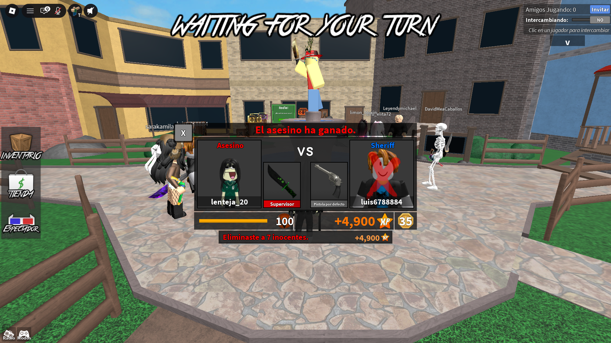

Mis experiencias favoritas
Dentro de Roblox hay millones de experiencias. Estas son las que más juego:
- Murder Mystery 2 — Juego de deducción social donde hay tres roles: asesino, sheriff e inocentes. El objetivo es sobrevivir o descubrir quién es el asesino antes de que te atrape. Lo que más me gusta es la tensión de no saber en quién confiar.
- Arsenal — Shooter en primera/tercera persona donde las armas van cambiando automáticamente conforme subes de nivel en cada ronda. Es rápido, competitivo y perfecto para partidas cortas.
- Expedición Antártida — Experiencia de exploración y supervivencia ambientada en un entorno helado, donde hay que resolver retos del clima extremo y avanzar por el mapa.
